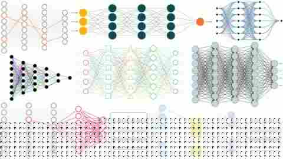

Neural Network Architecture Diagrams
A public gallery of publication-ready neural network architecture and visualization examples generated with Neural Architecture Designer v1.0, a Python application for customizable scientific network diagrams.
Neural Network Architecture Diagram Examples
Examples of multilayer neural network diagrams with dense and curved connectivity, varied node styles, activation blocks, and customizable visual encoding.

Neural Network Visualization and Path Highlighting
Examples demonstrating highlighted computational paths, colored connection patterns, mixed shapes, input/output boxes, and different publication-oriented layouts.
Neural Architecture Designer v1.0 Interface
The desktop interface provides editable layers, group headers, annotations, connection geometry and style controls, live preview, smart auto-fit, and publication export.